Deze handleiding gebruikt echte screenshots van een lokale training met fictieve clubs, een versnelde klok en gesimuleerde uitslagen. De Admin-inrichting is via de website doorlopen. Bulkregistraties en wedstrijdafhandeling zijn expliciet door een testhulp via bestaande beveiligde acties uitgevoerd. Er is geen echte e-mail verzonden, geen EA-koppeling aangetoond en geen productiedeployment uitgevoerd. Een trainingsdemo bewijst niet alle uitzonderingen of productieschaal. In de eerste testbatch ontbrak de clubvermelding bij spelersstatistieken. Die testhulp is gecorrigeerd; de individuele competitiebeelden tonen alleen de latere correct gekoppelde verslagen. De volledige spelersstatistiek over het hele seizoen is daarom niet als geslaagd afgetekend.
- Begin bij Regional Leagues
- Maak de vaste leagues één keer
- Controleer wat is opgeslagen
- Publiceer één inschrijfperiode voor de regio
- Voorwaarden vóór inschrijving tonen
- De voorzitter schrijft de club in
- Inschrijving en bevestiging zijn verschillend
- De eerste plaatsing voorbereiden
- Speeldata voor de plaatsing vastleggen
- Van resultaten naar D1A, D2A en D2B
- Loting is niet hetzelfde als kalenderpublicatie
- Publiceer de complete leaguekalender
- Eén beker voor alle groepen
- Beker activeren en volgen
- Wat clubs op de website zien
- Statistieken komen uit het wedstrijdverslag
- Controleer de volledige beker
- Beloningen en trofee controleren
- Promotie en degradatie volgen
- Een nieuw seizoen, dezelfde vaste league
- Waar je alles terugvindt
Veldwijzer
STAGE / 01
01 · Begin bij Regional Leagues
Open Admin → Regional Leagues. Gebruik Start guided task voor een nieuwe taak. Leagues & Cups toont bestaande competities; Management bevat afzonderlijke beheeracties. De demo start met 60 fictieve clubs en vier spelers per club, maar zonder leagues. De profielen en testtrofeeën zijn door een lokale testhulp voorbereid. Er is geen productiegegevensbestand gebruikt.
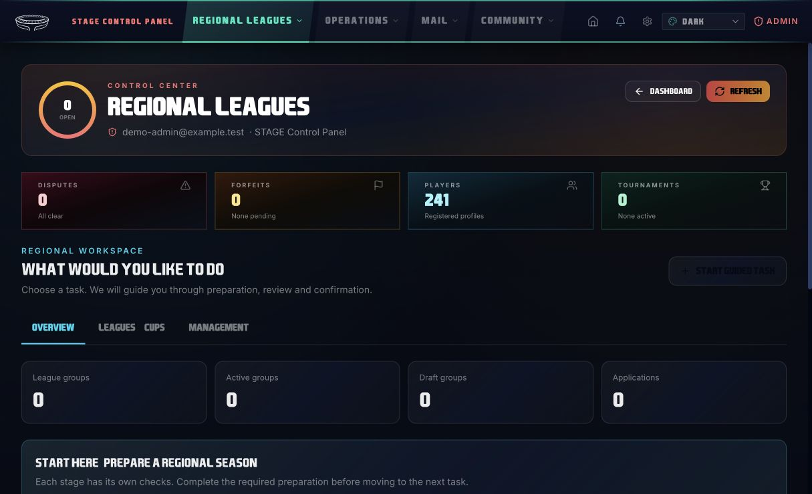
01 · 01-admin-empty · LOCAL TRAININGSTAGE / 02
02 · Maak de vaste leagues één keer
Kies Create a league. Maak D1 en D2 binnen hetzelfde regionale systeem en platform. In dit voorbeeld: uk-ireland, cross-platform, telkens Capacity 20. Kies de bestaande catalogustrofee bij Default trophy. D2B wordt later door de sportieve verdeling gemaakt; maak daarvoor geen tweede onafhankelijke D2-league. Een nieuw seizoen is een editie van dezelfde vaste league.
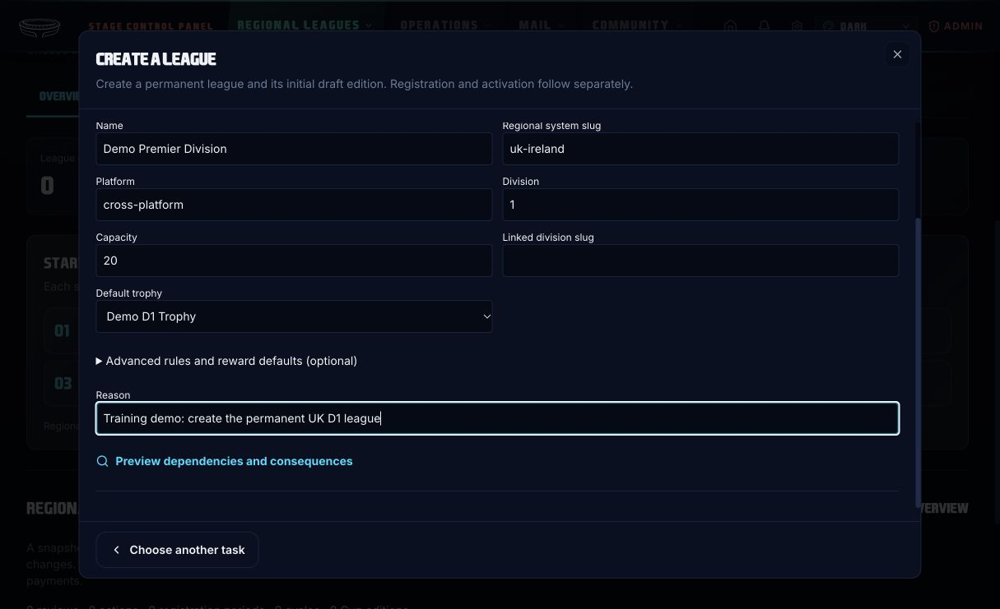
02 · 02-create-league-fields · LOCAL TRAININGSTAGE / 03
03 · Controleer wat is opgeslagen
Klik Preview dependencies and consequences, lees het overzicht, vink de bevestiging aan en kies Confirm create. Open vervolgens Leagues & Cups: je ziet twee vaste leagues met hun eerste concepteditie. Een concept heeft nog geen gepubliceerde wedstrijden. Na een verversing kan een formulier opnieuw leeg zijn; controleer eerst de lijst voordat je opnieuw op Create drukt.
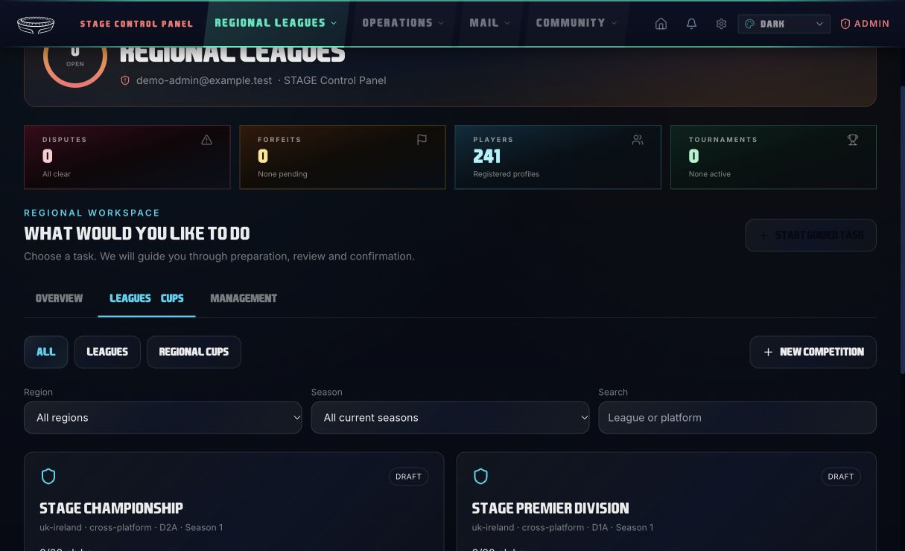
03 · 05-two-permanent-leagues · LOCAL TRAININGSTAGE / 04
04 · Publiceer één inschrijfperiode voor de regio
Kies Open registration. Selecteer het D1-systeem als ingang voor de hele regio, niet als belofte van D1. Voorbeeld: Target season 1, Reset series 0, inschrijving vanaf 18 januari 2027, eerste leagueweek vanaf maandag 15 maart. Vier weken inschrijving eindigen 15 februari; de gezamenlijke bevestigingsweek eindigt 22 februari. Reserve-aanvulling sluit uiterlijk 48 uur later. Alle datums zijn trainingsvoorbeelden, geen lanceringsplanning.
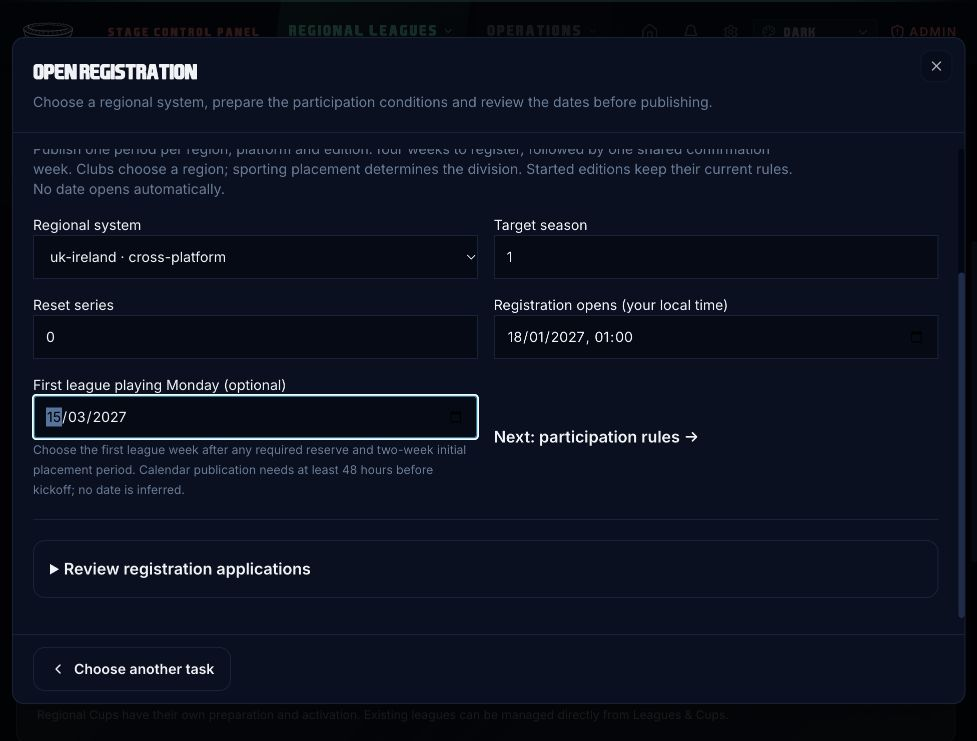
04 · 08-registration-dates · LOCAL TRAININGSTAGE / 05
05 · Voorwaarden vóór inschrijving tonen
Laat Include Regional Cup entry ingeschakeld als de beker deel uitmaakt van deelname. Vul Published edition rules en Administrative reason in. De server voegt de toepasselijke vastgelegde regels toe. Lees Full conditions to be published en de berekende deadlines; kies daarna Confirm and publish these conditions. Dit maakt nog geen deelnemers, groepen of betalingen. Gepubliceerde voorwaarden horen bij die editie en worden niet achteraf via dit formulier herschreven.
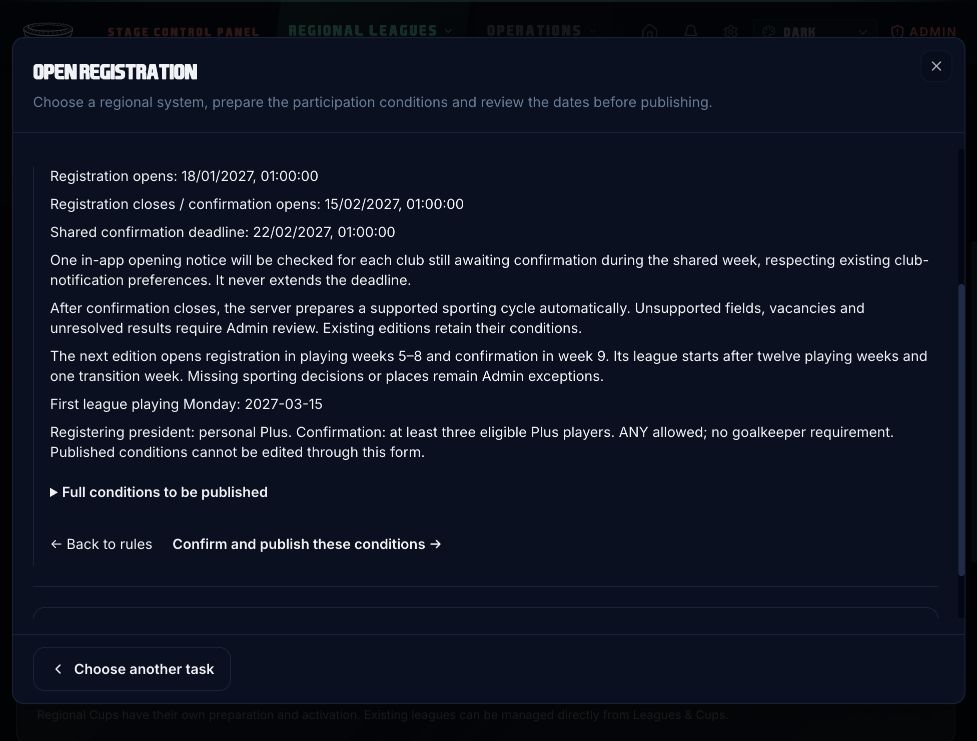
05 · 10-registration-review · LOCAL TRAININGSTAGE / 06
06 · De voorzitter schrijft de club in
Vanuit de regio of club opent de voorzitter Your club’s participation. De club kiest de regio en aanvaardt de gepubliceerde deelnamevoorwaarden. Ze kiest geen divisie. De voorzitter heeft persoonlijk STAGE Plus nodig. In de demo is één club via de zichtbare pagina ingeschreven; de andere 59 gebruikten dezelfde beveiligde aanvraagactie via de lokale testhulp.
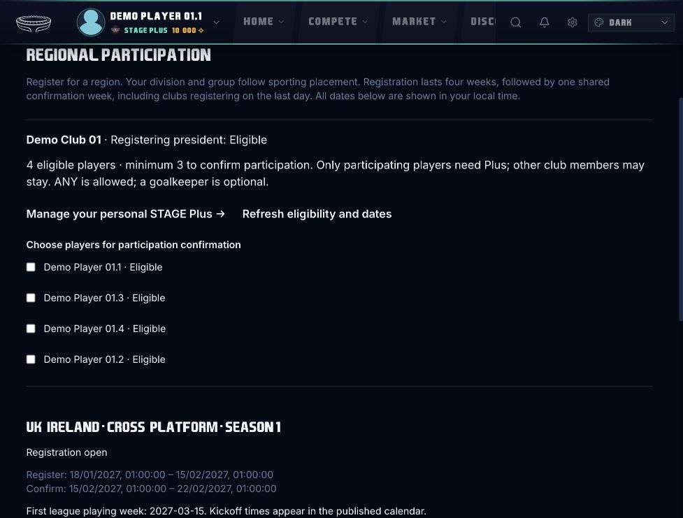
06 · 12-club-registration · LOCAL TRAININGSTAGE / 07
07 · Inschrijving en bevestiging zijn verschillend
Tijdens de gezamenlijke bevestigingsweek selecteert de club minstens drie speelgerechtigde spelers met persoonlijk Plus en bevestigt ze deelname. Een bankplaats is niet hetzelfde als gespeelde deelname. Een keeper is niet verplicht; ANY is toegestaan. Alle clubs hebben dezelfde deadline, ook wie op de laatste inschrijfdag binnenkomt. Admin kan de aanvragen bekijken bij Open registration → Review registration applications.
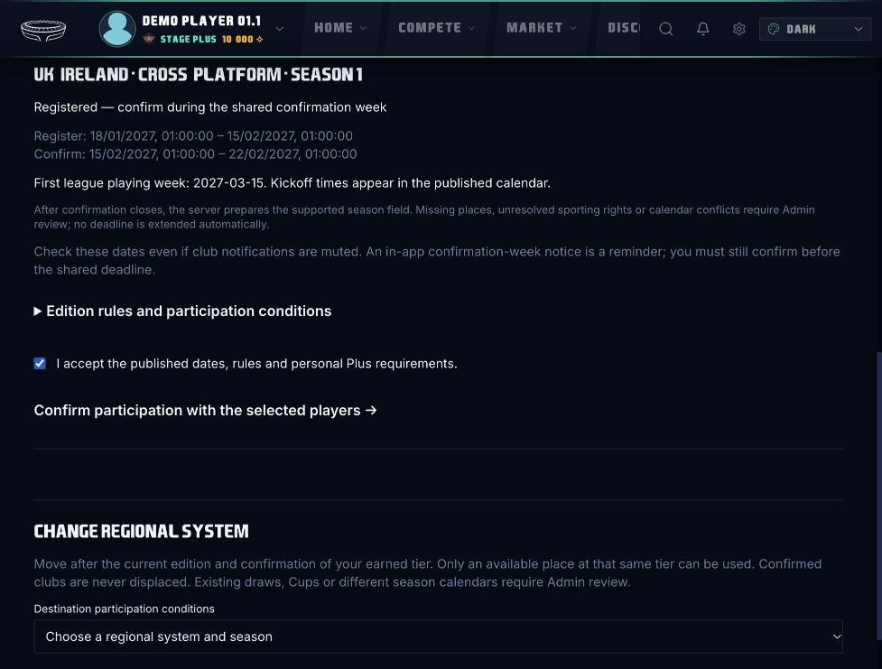
07 · 14-club-confirmation · LOCAL TRAININGSTAGE / 08
08 · De eerste plaatsing voorbereiden
Na bevestiging en de gezamenlijke reserveperiode bepaalt het systeem het ondersteunde deelnemersveld. Open Placement & next season en selecteer de opgeslagen cyclus. Gebruik voor de eerste editie de plaatsingsroute. Bij zestig clubs worden tien groepen van zes gevormd: vijf wedstrijden per club, 150 totaal. Deze demonstratie gebruikt die zestigclubroute; de eerder besproken veertigclubroute is anders. Een opgeslagen loting blijft behouden bij opnieuw openen.
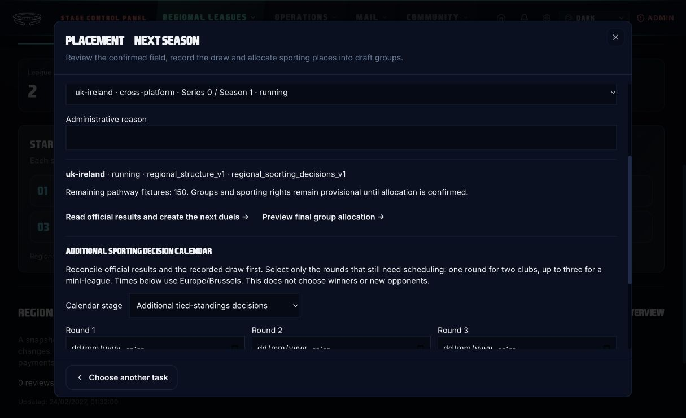
08 · 17-placement-cycle · LOCAL TRAININGSTAGE / 09
09 · Speeldata voor de plaatsing vastleggen
De opgeslagen loting bepaalt tegenstanders, maar nog niet alle aftraptijden. Open de kalender van de plaatsingscyclus en vul per ronde een datum en tijd in. De demo gebruikt 26 februari, 27 februari en 1–3 maart om 20.00 Europe/Brussels. Controleer de preview en publiceer. In echte wedstrijden publiceren clubs hun opstelling, melden ze zich gereed en dienen ze na afloop bewijs en de gespeelde deelnemers in.
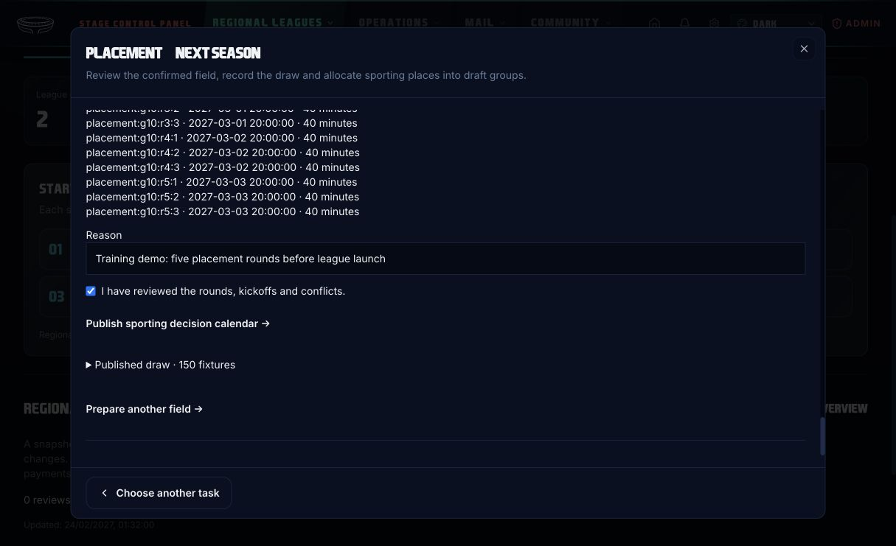
09 · 18-placement-calendar · LOCAL TRAININGSTAGE / 10
10 · Van resultaten naar D1A, D2A en D2B
Wacht op definitieve resultaten en eventuele beslissingsduels. Bekijk de definitieve verdeling en bevestig de opgeslagen toewijzing. In deze demo levert de plaatsing drie groepen van twintig op. D2A en D2B delen dezelfde vaste D2-identiteit en trofee. De wedstrijden zijn gesimuleerd via de echte resultaatprocedure; er zijn geen EA-wedstrijden gespeeld of standen rechtstreeks ingevuld.
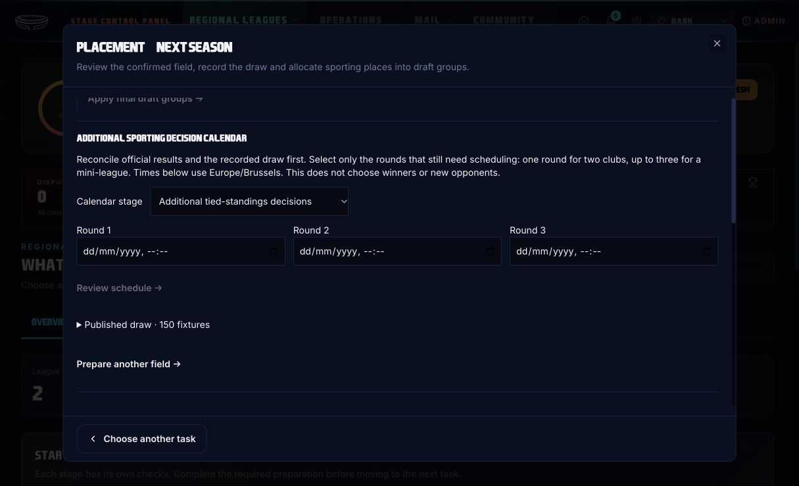
10 · 20-allocation-three-groups · LOCAL TRAININGSTAGE / 11
11 · Loting is niet hetzelfde als kalenderpublicatie
Open Prepare this season calendar vanuit de opgeslagen verdeling. Vul Reason in, bevestig de draw en klik voor elke groep Draw this group’s fixtures. Herhaal dit voor D1A, D2A én D2B. Elke groep krijgt 380 heen- en terugwedstrijden. Kies de eerste speelmaandag en Preview season calendar. De preview moet alle drie groepen bevatten: 1.140 wedstrijden. Bekijk de 38 rondetijden en eventuele blokkades voordat je publiceert.
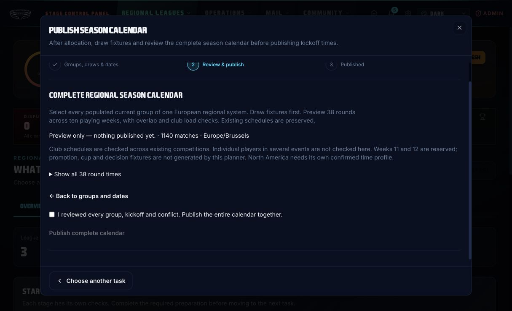
11 · 22-calendar-preview · LOCAL TRAININGSTAGE / 12
12 · Publiceer de complete leaguekalender
Vink de kalenderbevestiging aan en kies Publish complete calendar. Controleer de melding dat wedstrijden en GameDay gekoppeld zijn. Europa gebruikt dinsdag/donderdag 20.00 en 20.40 Europe/Brussels, met blokken van veertig minuten. De 38 rondes liggen over tien speelweken. Week 11 is voor promotie; week 12 bevat onder meer de bekerfinale. De demo controleert opgeslagen meldingen, niet of spelers die werkelijk gelezen hebben.
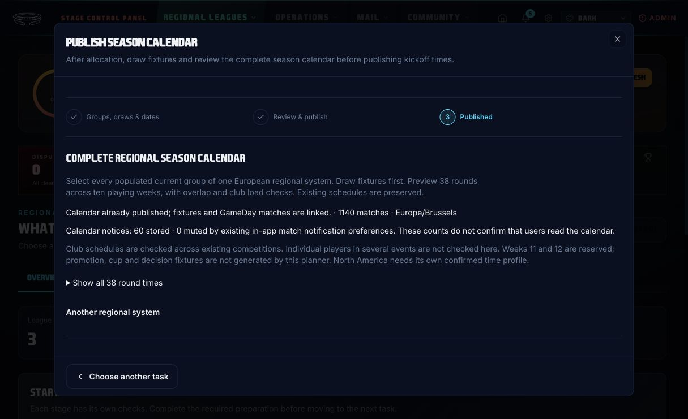
12 · 23-calendar-published · LOCAL TRAININGSTAGE / 13
13 · Eén beker voor alle groepen
Kies Regional Cups. Selecteer de vaste Cup en de gepubliceerde leaguekalender. De trofee komt uit dezelfde catalogus als league- en GOST-trofeeën. Review participants and Cup calendar verzamelt de zestig bevestigde clubs die de bekervoorwaarden aanvaardden. De zes rondes staan op zondag in weken 2/4/6/8/10/12. Save draft and record the first draw bewaart vier byes en 28 eerste-rondewedstrijden. Dit start de beker nog niet.
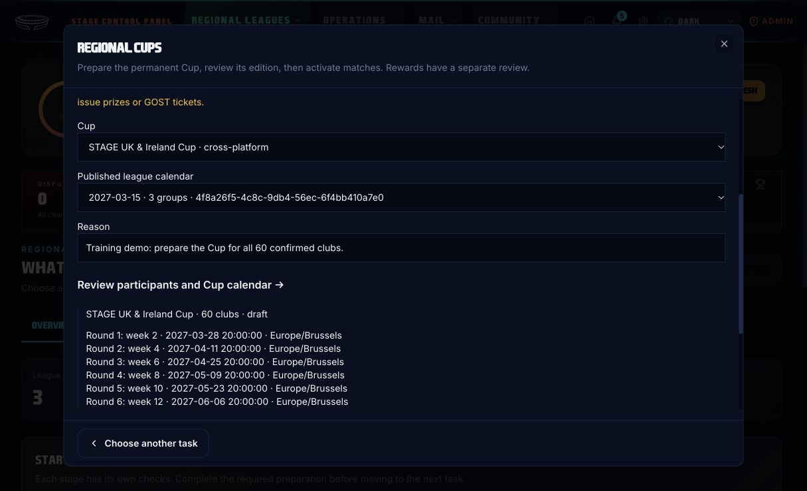
13 · 24-cup-calendar · LOCAL TRAININGSTAGE / 14
14 · Beker activeren en volgen
Ga naar Manage existing edition of Next: review activation. Selecteer de concepteditie, kies Review activation, lees de preview en vul een reden in. Na bevestiging start Activate Cup de eerste ronde in GameDay. De volgende open loting volgt automatisch zodra de vorige ronde definitief is. Een volledige beker met zestig clubs telt 59 gespeelde duels. GOST geeft deze beker geen automatisch toegangsticket.
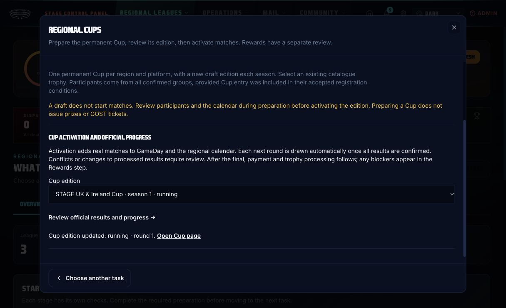
14 · 27-cup-running · LOCAL TRAININGSTAGE / 15
15 · Wat clubs op de website zien
Compete → Regional Leagues toont de regio, trofeeën en afzonderlijke groepen. Explore league opent Overview, Clubs, Stages, Table, Stats, Rewards en History. Table toont onder meer punten, gespeelde wedstrijden en de sportieve route. In deze zestigclubstructuur degraderen de onderste vier uit D1; uit elke D2-groep promoveren de kampioen en één play-offwinnaar. D2 heeft geen degradatie naar een nog niet bestaande D3.
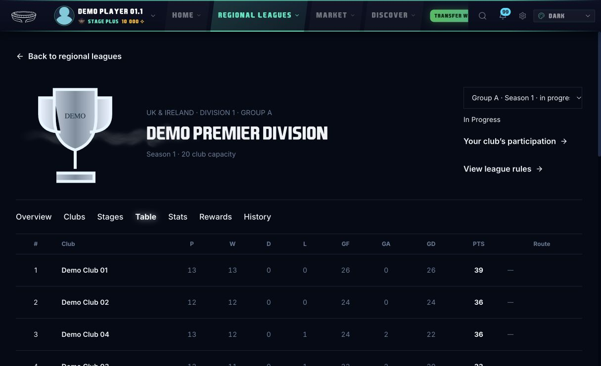
15 · 30-league-table · LOCAL TRAININGSTAGE / 16
16 · Statistieken komen uit het wedstrijdverslag
Stats → Clubs toont clubtotalen. Individual Players toont goals, assists, beoordelingen en deelnames; kies de ranglijst bij Ranking. Alleen een uitslag invullen is niet genoeg voor spelersstatistieken: de werkelijke deelnemers en hun club, goals en assists moeten in het verslag staan. De demo registreert drie spelers per club en gebruikt synthetische doelpunten. Dit zijn verklaringen binnen STAGE, geen automatische verificatie door EA.
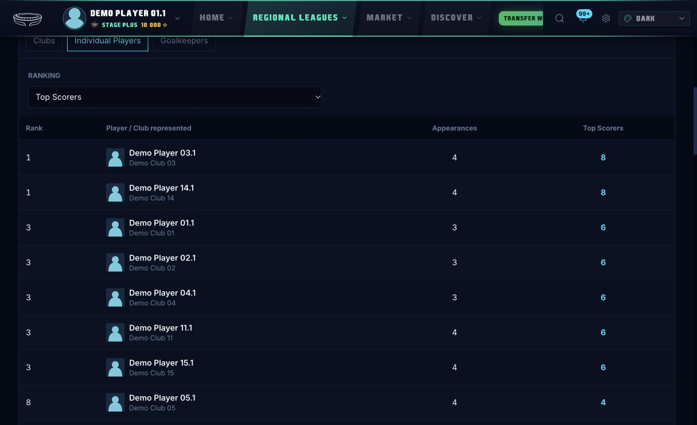
16 · 32-player-statistics · LOCAL TRAININGSTAGE / 17
17 · Controleer de volledige beker
De publieke bekerpagina toont na de finale Completed en de kampioen. In de demo zijn alle zes rondes afgerond: 28 + 16 + 8 + 4 + 2 + 1 = 59 wedstrijden. Vier byes tellen niet als gespeelde wedstrijden of spelersdeelnames. Gebruik Stages & results voor de rondes en History voor andere edities.
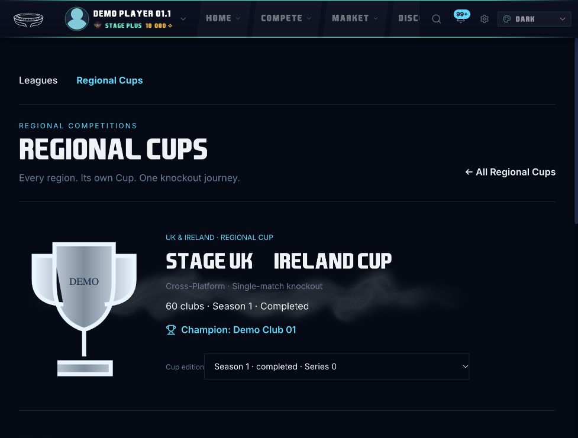
17 · 35-cup-completed · LOCAL TRAININGSTAGE / 18
18 · Beloningen en trofee controleren
Rewards toont 7.000.000 STC voor de winnaar en 3.000.000 STC voor de finalist, gefinancierd door STAGE. Geen derdeplaatsprijs en geen extra bekerinschrijfgeld. De demo toont Payment status: paid en Trophy: awarded. In Admin vind je de bijbehorende controle onder Regional Cups → Review rewards. Dit zijn uitsluitend STC-boekingen in de lokale testdatabase, geen echte betalingen. Pas bestaande beloningen niet opnieuw toe omdat je de pagina opnieuw opent.
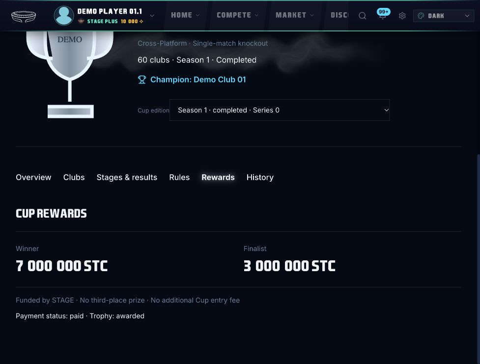
18 · 36-cup-rewards · LOCAL TRAININGSTAGE / 19
19 · Promotie en degradatie volgen
Voor seizoen 2 hebben dezelfde zestig clubs opnieuw ingeschreven en bevestigd. De definitieve league-eindstanden leveren vier promotiehalvefinales op, gevolgd door twee finales. Per D2-groep spelen 2 tegen 5 en 3 tegen 4; de winnaar van de finale promoveert samen met de kampioen. In de demo promoveren Demo Club 12, 16, 17 en 22. Demo Club 20, 23, 34 en 37 dalen uit D1. De opgeslagen overgangscyclus bewaart de sportieve toewijzing; er komt geen nieuwe eerste plaatsing voor bestaande clubs.
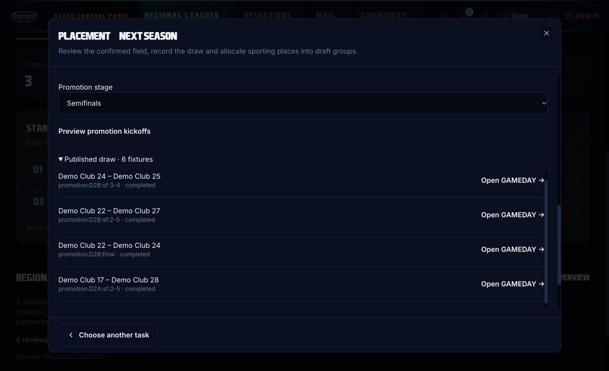
19 · 39-promotion-allocation · LOCAL TRAININGSTAGE / 20
20 · Een nieuw seizoen, dezelfde vaste league
De automatische overgang heeft D1A, D2A en D2B voor seizoen 2 gevuld met elk twintig clubs, de volgende leaguekalender gepubliceerd en de volgende beker voorbereid en geactiveerd. De eerste wedstrijd van seizoen 2 is ook bevestigd in de demo. De vaste D1- en D2-identiteiten en hun trofeeën zijn gelijk gebleven. De editiekiezer laat seizoen 1 en seizoen 2 zien; dat zijn verschillende seizoenen, geen dubbele onafhankelijke leagues.
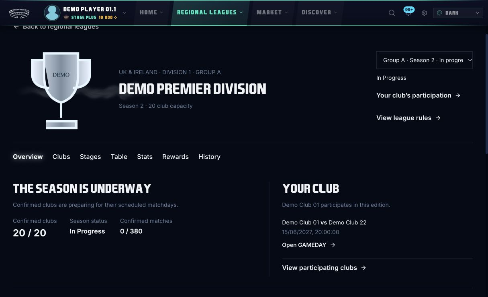
20 · 38-season-selector · LOCAL TRAININGSTAGE / 21
21 · Waar je alles terugvindt
Admin → Regional Leagues → Admin handbook · EN / FR / NL opent deze handleidingen. Start guided task opent de wizards. Leagues & Cups → Manage league bevat Setup & actions, Fixtures & results en Standings. Regional Cups bevat voorbereiding, activering en Review rewards. Officiële uitzonderingen staan apart bij Official decisions; reset en verwijderen zijn geen normale seizoenstappen. De drie handleidingen hebben dezelfde stappen en screenshots. De appteksten blijven standaard Engels.
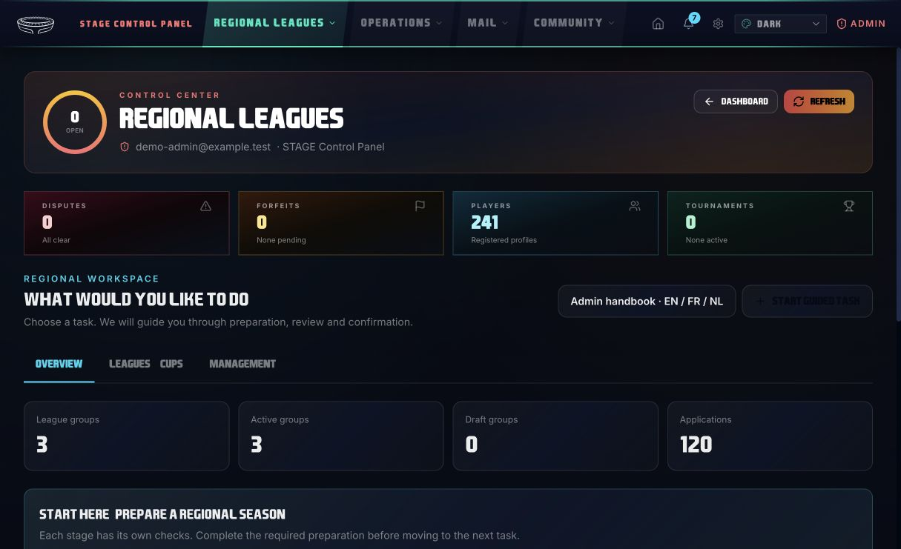
21 · 40-admin-handbook · LOCAL TRAININGVeldwijzer
| UI label | Voorbeeld | Wat betekent dit? |
|---|
| Name | Demo Premier Division | Leesbare naam van de vaste league. |
| Regional system slug | uk-ireland | Technische regiocode. Gebruik dezelfde code voor D1, D2 en de Cup. |
| Platform | cross-platform | Platformbereik; dezelfde waarde binnen dit systeem. |
| Division | 1 / 2 | Het niveau, niet het aantal groepen. D2B blijft Division 2. |
| Capacity | 20 | Clubs per groep, niet het totale regionale deelnemersveld. |
| Linked division slug | uk-ireland-div-1 | Alleen de bestaande gekoppelde divisiecode gebruiken als die route nodig is. Niet zelf een nieuwe regiocode verzinnen. |
| Default trophy | Demo D1 Trophy | Bestaand item uit Trophies. Toewijzen toont de trofee; het kent nog geen prijs toe. |
| Rules (JSON) / Reward defaults (JSON) | {} | Geavanceerd en optioneel. Laat staan tenzij je de ondersteunde configuratie kent; gewone deelnamevoorwaarden staan bij registratie. |
| Reason / Administrative reason | Training: first regional season | Verplichte uitleg voor het auditlog; geen tekst die je als algemene regel aan spelers belooft. |
| Regional system | uk-ireland · cross-platform | Ingang voor alle divisies en groepen in deze regio/platformcombinatie. |
| Target season | 1 | Editienummer. Verhoog dit niet door een nieuwe vaste league te maken. |
| Reset series | 0 | Identiteit van een resetreeks. Geen gewone seizoensknop; voor een normale nieuwe editie niet wijzigen. |
| Registration opens (your local time) | 18 Jan 2027, 01:00 Brussels | Start van vier weken inschrijving. De preview rekent de gezamenlijke bevestigingsdeadlines uit. |
| First league playing Monday (optional) | 2027-03-15 | Eerste week van de league, na reserves en benodigde plaatsing. Zonder datum kan automatische publicatie wachten op Admin. |
| Include Regional Cup entry | checked | Vermeldt de automatische bekerdeelname vooraf in de geaccepteerde voorwaarden. |
| Published edition rules | Schedule + minimum players + format | Nuttige editievoorwaarden; lees ook de door de server toegevoegde regels in de preview. |
| Saved cycle | region / series / season | Hervat de bestaande opgeslagen loting en verdeling. Geen nieuwe cyclus maken omdat je opnieuw opent. |
| Confirmed field / Target count | 60 | Definitief bevestigde clubs; geen schatting van toekomstige inschrijvingen. |
| Source groups | D1A, D2A, D2B | Voor een volgende editie: alle bijbehorende huidige groepen, met definitieve resultaten. |
| Round date / time | 20:00 Europe/Brussels | Werkelijke aftrap van die plaatsings- of beslissingsronde. Controleer de tijdzone. |
| Monday of the first playing week (Europe/Brussels) | 2027-03-15 | Kalenderanker voor alle geselecteerde leaguegroepen samen. |
| Published league calendar | 2027-03-15 · 3 groups | Bron van de bekerdeelnemers en speelweken; niet een willekeurige andere editie. |
| Cup edition | Season 1 · draft | De seizoenseditie die je voorbereidt, activeert of voor beloningen bekijkt. |
| Expected revision / preview | automatic | Technische versiecontrole uit de preview. Bij gewijzigde gegevens opnieuw bekijken; geen blokkade omzeilen. |
Wie doet wat?
Admin kiest vooraf regio, vaste leagues, trofeeën, datum en editievoorwaarden. Clubs schrijven zich in, bevestigen hun spelers, spelen en leveren bewijs. De server bewaart lotingen, verwerkt bevestigde uitslagen, berekent standen en bereidt ondersteunde vervolgstappen voor. Geschillen, terugtrekkingen, sancties en financiële uitzonderingen blijven expliciete Adminbeslissingen. GOST en D3 worden door deze demo niet geopend.
De volgende editie
De gewone herinschrijving begint in speelweek 5 en duurt tot het einde van week 8. Week 9 is deelnamebevestiging; de gezamenlijke reserveperiode duurt maximaal 48 uur. Promotieplay-offs liggen in week 11: dinsdag halve finales, donderdag finales, 20.00 Europe/Brussels. De nieuwe league begint na week 12 en één overgangsweek. Gebruik nooit Fresh-start reset als gewone knop voor het volgende seizoen. Vaste league-identiteit en standaardtrofee blijven behouden; historische edities blijven apart raadpleegbaar.
Bewijs en grenzen
Deze handleiding gebruikt echte screenshots van een lokale training met fictieve clubs, een versnelde klok en gesimuleerde uitslagen. De Admin-inrichting is via de website doorlopen. Bulkregistraties en wedstrijdafhandeling zijn expliciet door een testhulp via bestaande beveiligde acties uitgevoerd. Er is geen echte e-mail verzonden, geen EA-koppeling aangetoond en geen productiedeployment uitgevoerd. Een trainingsdemo bewijst niet alle uitzonderingen of productieschaal. In de eerste testbatch ontbrak de clubvermelding bij spelersstatistieken. Die testhulp is gecorrigeerd; de individuele competitiebeelden tonen alleen de latere correct gekoppelde verslagen. De volledige spelersstatistiek over het hele seizoen is daarom niet als geslaagd afgetekend.